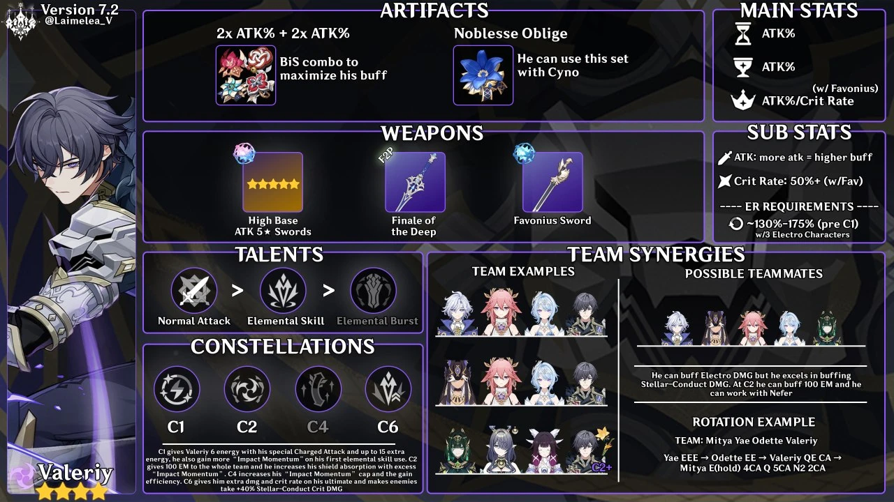

Build Valeriy in breve
Electro · Sword · 4★ · versione 7.2
| Artifacts | 2pz ATK% + 2pz ATK% (per massimizzare il suo buff) · Noblesse Oblige (nel team con Cyno) |
|---|---|
| Main stats | Sands ATK% · Goblet ATK% · Circlet ATK% / CRIT Rate (CRIT Rate con Favonius Sword) |
| Sub stats | ATK (più ATK = buff più alto) · CRIT Rate 50%+ con Favonius Sword |
| Energy Recharge | ~130%–175% prima della C1, con 3 personaggi Electro |
| Weapons | Spade 5★ con ATK base alto · Finale of the Deep (F2P) · Favonius Sword |
| Talents | Normal Attack > Elemental Skill > Elemental Burst |
| Constellations | C1 6 Energy con il Charged Attack speciale (fino a 15 extra), più Impact alla prima Elemental Skill · C2 +100 Elemental Mastery al team, l’Impact in eccesso rinforza lo scudo · C4 limite e guadagno di Impact più alti · C6 più danno e CRIT Rate sul Burst, i nemici subiscono +40% CRIT DMG da Stellar-Conduct |
| Team | Buffa i danni Electro, ma dà il meglio sullo Stellar-Conduct; a C2 funziona anche con Nefer. Compagni: Mitya · Cyno · Yae Miko · Odette · Nefer |
Yae EEE → Odette EE → Valeriy QE CA → Mitya E (hold), 4CA, Q, 5CA, N2, 2CA
Kit, rotazioni, team e showcase sono nella guida estesa di Valeriy.